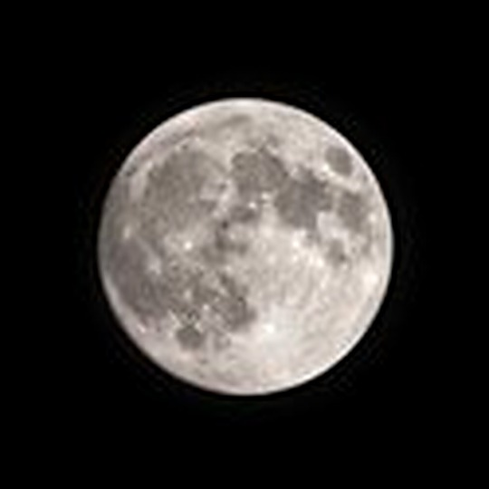
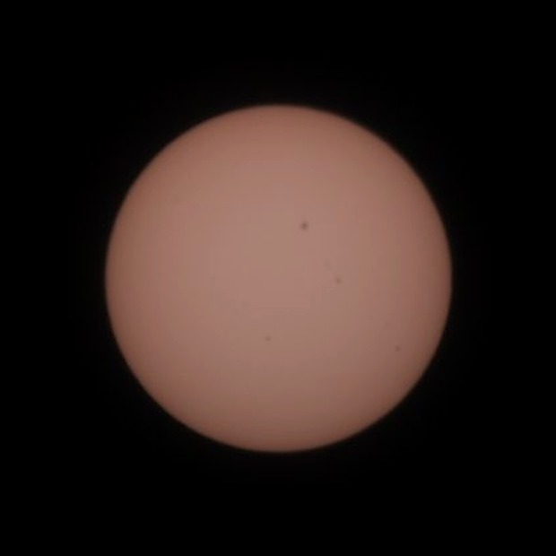
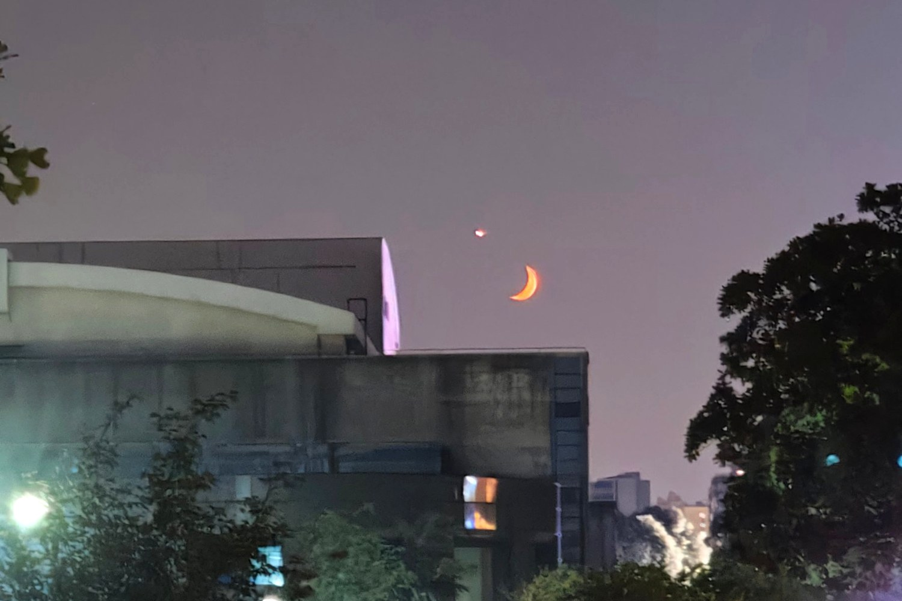
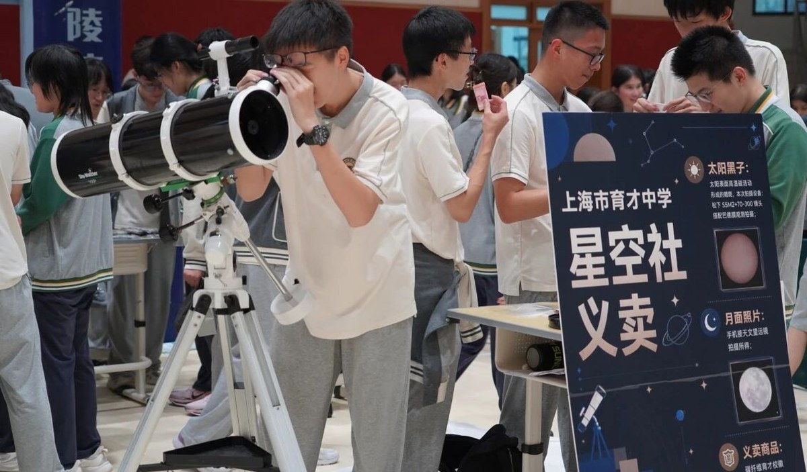
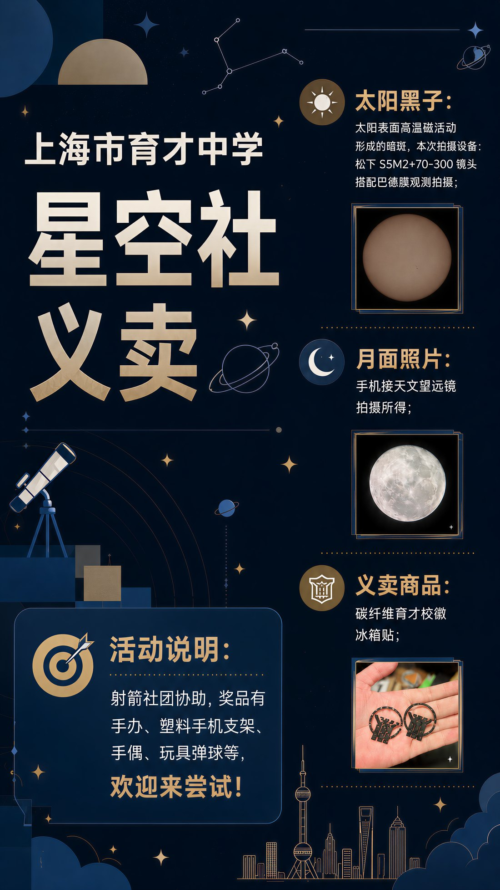

上海市育才中学 · 天文社团
星空社
STARGAZERS
把目光，交给夜空。
一间教室，一台望远镜，和一点点耐心。
星空社是育才的天文爱好者社团。
我们研究光怎么走，也研究光从哪里来。
我们把每周的傍晚留给星空：有人拆解望远镜的光路，有人练习对焦、追星、导星，有人守着一台相机等一个小时的曝光，也有人只是躺在操场上，认出夏季大三角。
我们不需要你会用赤道仪，也不需要你背下梅西耶星表。只需要你愿意在一个晴朗的晚上，抬头看一会儿。
- 观测校园操场 / 教学楼楼顶，社团课与晚自习后
- 拍摄月面、太阳黑子、行星与深空目标
- 研习光学原理、星图使用、天文竞赛与课题
- 展示社团展示、游园会与义卖
“我们看到的，是它几百年前的样子。”
—— 社团简介课上的第一句话
光路
把宇宙，收进一枚镜片
望远镜并不“放大”物体。它只是收集更多的光，再把光汇聚到一点。
理解这句话，就理解了下面三种结构。
用一块凸透镜，把光折弯。
光线穿过物镜时发生折射，平行光被汇聚到焦点；焦距之外再放一枚目镜，把像放大成你能看见的样子。成像正立，对比度高，是入门与月球、行星观测的经典结构。
- 光路平行光 → 折射 → 焦点 → 目镜
- 优点免维护、锐利、开机即用
- 代价口径做大很贵，有色差
用一面镜子，把光折回来。
抛物面主镜把光反射汇聚，45° 副镜在光路中途把它折出镜筒，焦点落在侧面。没有色差，同样价格能买到更大的口径——这是深空摄影最常见的选择。
- 光路平行光 → 主镜 → 副镜 45° → 目镜
- 优点大口径便宜，无色差
- 代价需校准光轴，成像倒立
把光路折叠起来，装进一只旅行箱。
前端一枚校正镜，后端一面带中心孔的主镜，光线在镜筒里往返两次，焦平面从主镜中央的孔穿出。两米焦距，镜筒只有半米——便携与长焦的折中方案。
- 光路校正镜 → 主镜 → 副镜 → 穿孔出射
- 优点短小、长焦、封闭不易积灰
- 代价中心遮挡，反差略低
今夜
—
月相
—
观测条件
—
上海市区光害较重，建议前往郊区或选择晴朗无月的夜晚
本地时间
--:--
UTC+8 · 31.38°N 121.25°E
观测档案
底片，还在冲洗
月面、太阳黑子、校园夜空，还有义卖摊位。
照片会陆续补充到这里。




编者注 照片都拍自社团活动：运动会、元旦和义卖现场。
海报
一张纸，把人叫到操场
招新、社团展示与游园会的海报。纵向的框已经在等他们。

游园会POSTER待补充